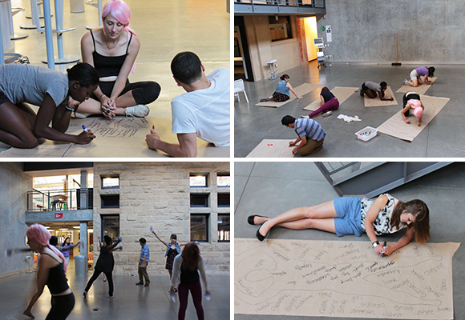

What are pop-up classes and how can you get your own up and running? Professor Joseph Tranquillo from Bucknell University and Epicenter's Victoria Matthew share key questions to get you started.

Joseph Tranquillo's pop-up class "How to be a cyborg" at Stanford University
by Joseph Tranquillo and Victoria Matthew
There’s a new activity we keep hearing about on campuses across the country: pop-up classes. What exactly are they? And how can you get your own up and running?
Pop-up classes are, generally speaking, short extracurricular workshops that offer students an opportunity to engage in new material, or activities not typically covered in the traditional curriculum. In pop-ups, interactivity is key: they’re not about formal instruction, they’re about discovery and hands-on learning. The way they’re implemented varies dramatically from institution to institution, with pop-up classes taking on different formats, topics, audiences and even instructor pools.
We recently dug into this topic with a number of Pathways to Innovation Program faculty team members: Carmina Sanchez from Hampton University, John Lovitt from Missouri S&T, Robert Nagel and Kurt Paterson from James Madison University, Bala Ram from North Carolina A&T, Sandra Pedraza from Universidad del Turabo, Mark Mondry from Colorado School of Mines, Alan Eberhardt from University of Alabama Birmingham, Beshoy Morkos from Florida Institute of Technology, Dietmar Rempfer from Illinois Institute of Technology and Peter Crouch from the University of Hawaii.
Based on these conversations, we’ve compiled some of the key elements to consider as you create your pop-up classes. Under the questions, we’ve outlined a variety of options to consider. The options you choose will likely align with your (and your school’s) philosophical leaning, be that casual and loose, centralized and structured, or something in the middle.
The Basics: Format, topics and regularity of offering
What is your preferred format?
The format can vary greatly in pop-ups, and that is one of their strengths. Choose to offer the class one time (full day or weekend), minimally repeated (every Wednesday night for four weeks), or perhaps off-semester (a day or days before or after a semester).
Should it have a topical focus or skills focus?
Consider the goals for your pop-up. Do you want to boost student skills in a particular area (e.g., a fabrication technique or communication skills) or discipline (e.g., literature)? Or do you want to offer an interdisciplinary pop-up that utilizes instructors with different backgrounds and fosters interactions among students from different majors? Your pop-up could be more about personal development, with a focus on mindsets and attitudes. You may just decide to leave it up to the instructor(s) and supply and demand.
Will it be offered regularly or one time only?
Pop-up classes can be one-time-only offerings that are meant to test out the viability of a particular topic, pedagogy or a collaborative partnership. Alternatively they may be regularly offered. And a university could offer a hybrid: some perennial, popular ones but also some that are new and experimental.
The People: Who manages, who teaches and who learns
Who will manage the pop-ups?
The structure underlying pop-ups could be as simple as a few instructors who post fliers, rent space and recruit students on their own, or as sophisticated as an entire university-wide system backed by funding, advertising, staff and other logistics. The middle ground is having pop-ups live and be managed within a certain domain, e.g., the university makerspace or a specific college.
Who are the instructors?
Your instructor pool could be very specific (only faculty, never faculty, only students) or could be broader and include the entire campus and off-campus community, including alumni. Broadening your instructor pool can be a great way to engage the community.
What is your target audience?
Some pop-ups are targeted only to students and in some cases a subset of students (e.g., undergraduates in particular majors). Some can be developed for other specialized audiences (segments of alumni, faculty or the community). Alternatively, you can open up a pop-up to everyone, encouraging the mixing of backgrounds. You can also leave it up to the instructor to identify the audience.
The Motivations: Why take a pop-up and why teach one?
Tap into learner’s passions and desire to learn new skills
Given the flexibility that pop-ups offer in terms of format, pedagogy and topics, you can create ones that tap into students’ particular passions and needs, be that learning how to use soldering equipment or 3D printers. But let’s not stop with the students! Instructors often get jazzed about sharing their own personal passions and learning alongside students by serving as a facilitator. For some instructors, that’s compensation enough.
Foster the ability to make new connections
Pop-ups often attract motivated, engaged learners, who thrive in a more open-ended environment. These are just the kinds of people that a faculty member might want to work with on their research, or be a TA. Similarly, students and community members can connect with like-minded people and possibly recruit them for projects.
Offer credit as an option
If credit is attached to a pop-up it can offer students an alternative way fulfill part of a degree or certificate program. However, self-determination theory (and experience) indicates that rewards like credit can demotivate students, so non-credit can be considered, too. You’ll likely attract different students with credit versus non-credit pop-ups.
Use traditional compensation to engage instructors
Compensation in the traditional sense is an option. For faculty, for example, does the pop-up become part of their teaching load? Do you buy out their time? Is there a stipend you provide to other instructors, including students? For students, compensation might come in the form of course credit, or time toward their assistantship.
The Administrative Details: Funding and recruitment
Should your pop-ups be funded or self-funded?
To run pop-ups, it’s useful to have some minimal budget for basic materials, food, etc. This funding could come from many sources: the university, the department, or student registration fees. If funded from student registration fees, your pop-ups can be (mostly) self-funded and a stand-alone entity within the university. This approach can also help with accountability of the students. By not charging, however, you can broaden student participation and those attending will be there because of personal interest and passion, not simply because they paid.
Will you vet applications or take a free-market approach?
If, as mentioned above, instructors complete a proposal, some system should be in place to get and vet proposals. One possibility is the free-market approach: let anyone offer a class and then only run those that fill. On the other end of the spectrum, a group might vet proposals using some previously identified criteria. And there are many options in between, e.g., a short application followed by a short interview with the instructors.
What are the options for advertising and recruitment?
Both are needed to get instructors to offer and students to take the classes. This can be very formal and standardized (a website that publicizes all pop-ups and includes a call for pop-up proposals). You may decide, though, that you want the process to be more loose and organic with instructors proposing pop-ups and doing their own advertising.
There is no one answer to any of these questions and every university will need to find what works best for them. What is clear, however, is the exciting potential of this flexible format to ignite passion and engage your students and instructors. Good luck!
About the authors:
Joseph Tranquillo is an Associate Professor of Biomedical and Electrical Engineering at Bucknell University. He helped start Bucknell’s Biomedical Engineering Department and teaches classes in medical device design, instrumentation and systems. He was the founder and inaugural chair of the Biomedical Engineering Society Undergraduate Research Track, co-chair of the Body-Of-Knowledge task force, and is currently the program chair of the ASEE Biomedical Engineering Division (BED). He co-founded the KEEN Winter Interdisciplinary Design Experience and is the co-director of the Bucknell Institute for Leadership in Technology and Management. Joe has received funding from the NSF, NIH, DoD, NCIIA, KEEN, and his work has been featured on the Discovery Channel, TEDx and CNN Health. Joe has won the ASEE BED teaching award and is a National Academy of Engineering Frontiers of Engineering Education faculty member. He most recently was on sabbatical at Stanford as a Visiting Scholar in the Stanford Technology Ventures Program and Epicenter.
Victoria Matthew is co-leader of the Pathways to Innovation Program, the driver of the Epicenter’s faculty development and engagement strategy, and senior program Officer for Faculty Development at VentureWell. In Pathways, she leads the design of in-person and online workshops and convenings. She connects faculty with curated content, experts, and with each other, with a goal of growing the Pathways learning community. The Pathways program is currently accepting proposals (due September 21, 2015) for schools to take part in the third year of the program. For more information about Epicenter, an NSF-funded center directed by Stanford University and VentureWell, and the Pathways to Innovation program, visit epicenter.stanford.edu.